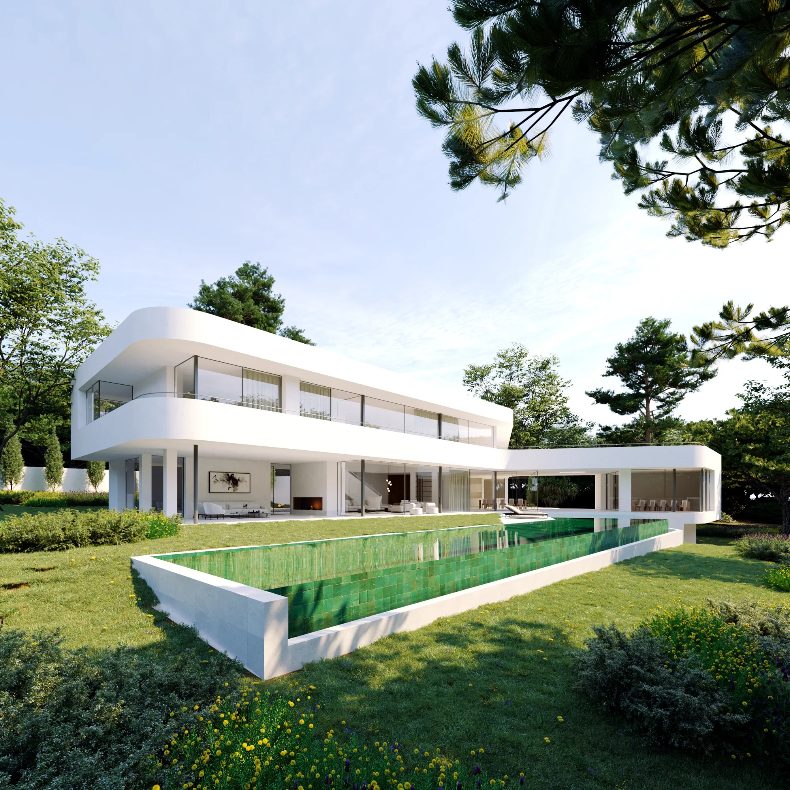
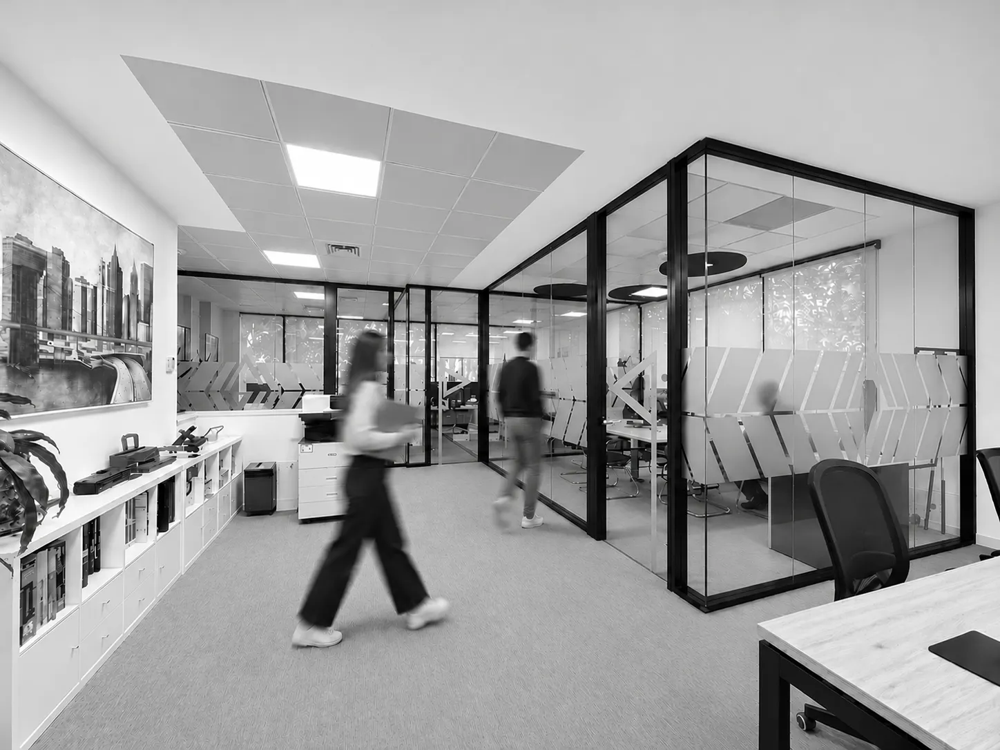

NOSOTROS
Más de 30 años construyendo confianza

Desde 1995, en ANCODARQ | ESCUADRA desarrollamos nuestra actividad en el sector de la construcción, con una trayectoria consolidada en la rehabilitación y restauración de edificios, la transformación de viviendas y espacios comerciales, y la ejecución de proyectos residenciales de nueva planta.
Nuestra experiencia nos permite abordar cada proyecto desde una perspectiva integral. Contamos con un equipo propio que participa directamente en la planificación, supervisión y ejecución de las obras, garantizando una coordinación eficaz, un seguimiento continuo y una comunicación cercana con clientes y profesionales.
Entendemos nuestro trabajo desde la colaboración, el respeto por el proyecto, el rigor técnico y la atención al detalle, aspectos fundamentales para alcanzar un resultado de calidad.
Con sede en Madrid, seguimos construyendo sobre los valores que nos han acompañado desde nuestros inicios: experiencia, compromiso y confianza.
Y MEDIO AMBIENTE →
SERVICIOS
Construimos espacios. Materializamos proyectos.
PROYECTOS